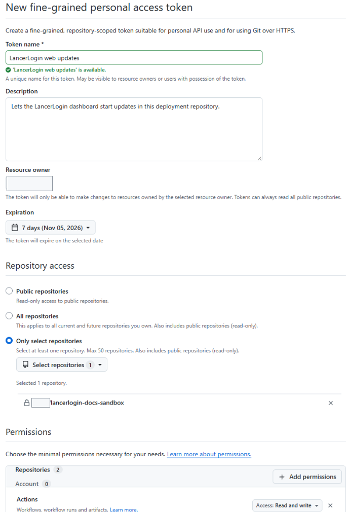
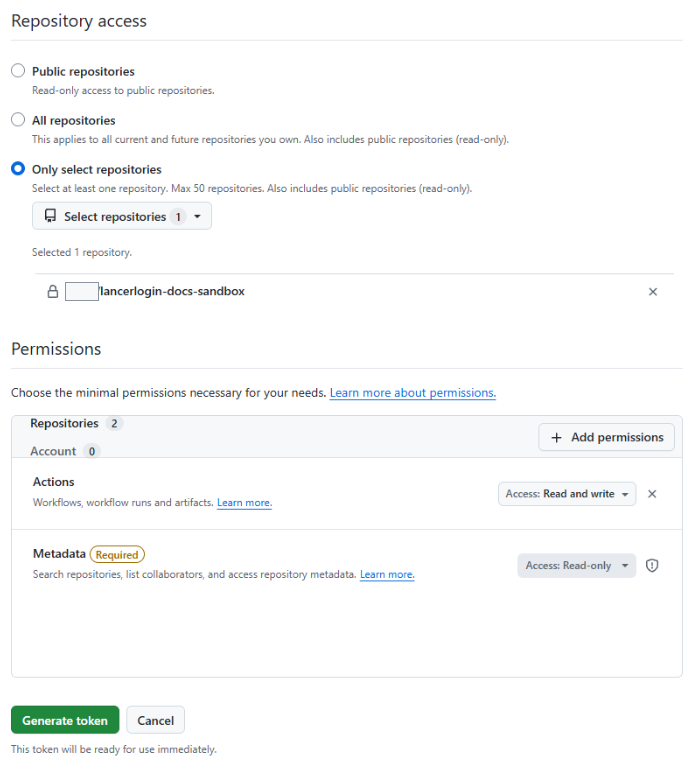

Dashboard
The web dashboard, API, and database, updated from Settings with a backup first.
Update the dashboardUpdates
The dashboard, each kiosk, and plugins update separately. Update the dashboard first, then each kiosk.
The web dashboard, API, and database, updated from Settings with a backup first.
Update the dashboardThe software on each Raspberry Pi, updated from the Kiosks page one device at a time.
Update kiosksAdded, upgraded, or removed in Settings, then deployed like a dashboard update.
Manage pluginsOne-click dashboard updates need a GitHub token that lets your installation start the update workflow in your private repository. Without it, you can still update by running the workflow yourself.
LANCERLOGIN_WEB_UPDATE_TOKEN.

LancerLogin reads the token's expiry from GitHub, so you do not record it anywhere. Settings › Updates shows a Setup status panel with rows for the Dashboard update credential, the Update controller workflow, the optional Plugin management credential (with numbered steps to set it up), the Latest credential refresh, and the Repository workflow files. Each row shows a status such as Ready, Expiring soon, Expired, Rejected by GitHub, Not set up, Update needed, Missing, or Not checked. Until the token is installed, the page says Dashboard updates are not set up yet. A banner appears 14 days before the token expires. To replace a token, create a new one with the same settings, replace the secret, and run Refresh web update credential again.
Dashboard updates install a new release but never change the files in your private repository, so its workflows can fall behind. Settings › Updates › Setup status checks them:
This needs three more permissions on the dashboard update token: Contents, Pull requests and Workflows, each Read and write. If one is missing, the row says which one and how to add it. Editing a token's permissions keeps the same token, so you do not need to replace the secret. You can remove the permissions again after merging.
The Latest credential refresh row shows whether the last Refresh web update credential run worked and, if not, why, with a link to the run. Choose Check again after a run finishes to see its result at once. To see the reason, the token also needs Checks: Read-only. If a run stopped without a reason, your repository probably has an older refresh workflow: use Update repository files, then run the workflow again. The refresh workflow itself always uses the script from your installed release when it can find it.
An Admin sees a notice when a newer release is available on the installation's update track. Read its release notes first.
If the card says recovery is required, stop. Do not start another update and do not restore the backup. Open Diagnostics and manual recovery on the card for the workflow run, then see Troubleshoot an update.
upgrade, keep release latest stable, enter your installation slug, and select Run workflow. Approve the production deployment if it waits for a reviewer.The upgrade uses the LANCERLOGIN_INSTALLATION_SLUG, LANCERLOGIN_DATABASE_ID, and LANCERLOGIN_API_URL environment variables you saved after installation. See Save the installation variables.
Update the dashboard first. Then, for each kiosk:
The kiosk downloads only an official release and checks it before switching. If the new release does not start correctly, the kiosk switches back to the previous release by itself, and the dashboard reports that the update failed. Pairing, fingerprint links, the PIN, and waiting scans are kept either way. If no result appears, do not press Update kiosk repeatedly; see Troubleshoot a kiosk.
Open Settings › Updates › Update track. Stable is the default and offers only stable releases. Beta also offers beta releases before they become stable; choose it, confirm the warning, and choose Save update track. The track applies to the dashboard and to kiosk updates.
Changing the track never installs anything by itself. Going back to Stable does not downgrade: you stay on the installed release until a newer stable release is published.
Plugins are code that runs inside your installation with the same access as LancerLogin itself. Add only plugins whose source you trust.
To manage plugins from the dashboard, open Settings › Modules › Manage modules. Adding, upgrading, or removing a plugin there commits the change to your private repository, and Apply plugin changes deploys it with the same backup-first steps as a dashboard update. A release update also deploys pending plugin changes. Each installed plugin shows its version and commit, and the latest release on its track, for example Latest on Stable: v0.2.1. When a newer release is available, the row says Update available and its Upgrade button is highlighted. Remove a plugin only after turning its module off and letting its data be deleted.
Dashboard plugin management needs a separate optional GitHub token, LANCERLOGIN_MODULE_SELECTION_TOKEN. Without it, edit lancerlogin.modules.json in your private repository and run an upgrade. Both methods are described in the module plugins reference.
An existing LancerLogin 1 installation updates in place, keeping its data, accounts, and paired kiosks. Install the 1.2.6 bridge release on the dashboard and on each kiosk first, then follow the upgrade guide.